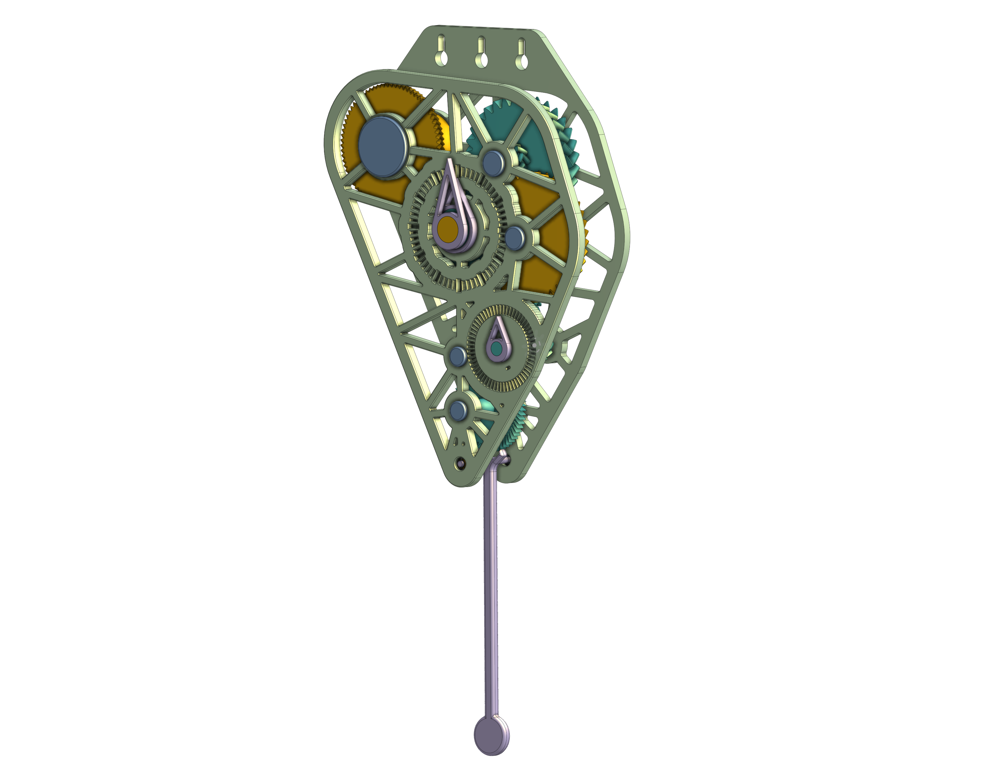

I wanted to learn how clocks work, so I decided to CAD one myself. I never built this clock, since at the time I didn't have a 3D printer or a place to hang it. Even so, designing it taught me a lot.
The model uses herringbone gears to reduce backlash in the gear train. I also alternated the diametral pitch (DP) of the gears between stages, which let me package the train more compactly. The only bearing in the design is on the escapement mechanism.
A weight powers the clock. 3D prints aren't the strongest material, but this works because the weight is geared down so much that the torque in the train is very low. Even a finger on the escapement mechanism could stop it.
In college, I hope to design a clock powered by a spring, because I do want to build a clock one day.

1 / 2
Credit & Copyright: Processing - Robert Gendler, Roberto Colombari; Data - Hubble Tarantula Treasury, European Southern Observatory